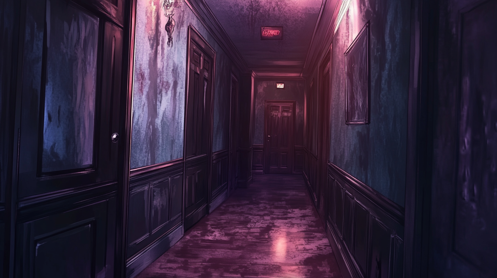
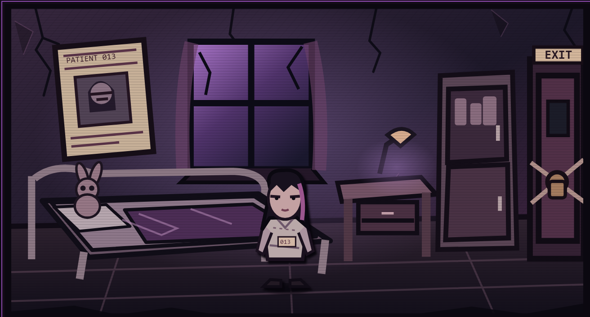

CASE FILE 001
IN DEVELOPMENT
LAST BROADCAST
A horror experience built around unsettling transmissions, mysterious signals and the feeling that someone is listening.
ENTER THE FACILITY →THE FORGOTTEN WARD — RESTRICTED ARCHIVES
A collection of strange worlds, unfinished experiments, and stories that refuse to stay buried.
A horror experience built around unsettling transmissions, mysterious signals and the feeling that someone is listening.
ENTER THE FACILITY →
An interactive abandoned-asylum concept combining environmental storytelling, exploration and unsettling discoveries.
ENTER THE FACILITY →
A short browser-based horror mini-game. Search the ward, uncover hidden objects and escape before time runs out.
ENTER WARD 13 →